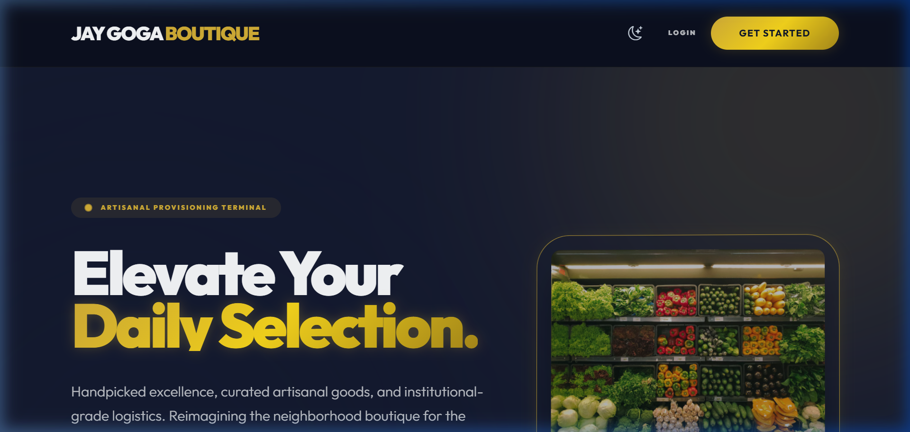
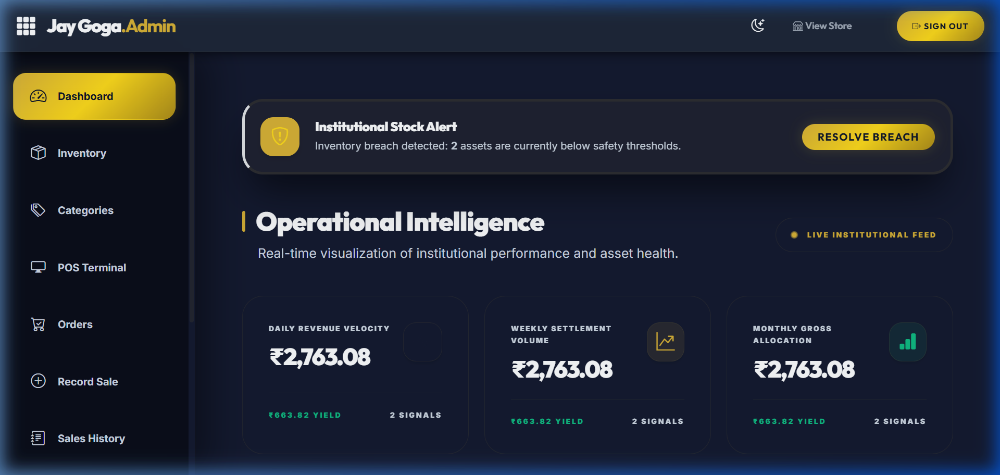
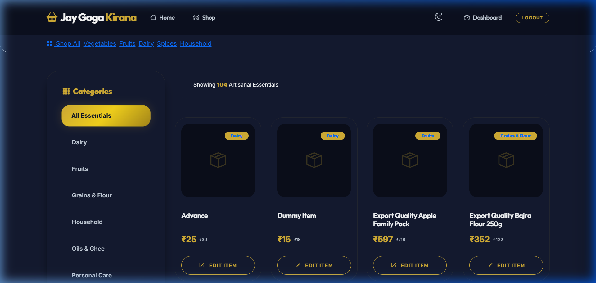

A complete technical reference for the E-Commerce & Inventory Management platform built with Python Flask.
| CH. | Title / Chapter Name | Section |
|---|---|---|
| 01 | PREFACE & PROJECT SCOPE | S1 |
| 02 | ACKNOWLEDGEMENT | S2 |
| 03 | ABSTRACT (PROBLEM & SOLUTION) | S3 |
| 04 | CHAPTER 1: INTRODUCTION | S4 |
| 05 | CHAPTER 2: SYSTEM ANALYSIS | S5 |
| 06 | CHAPTER 3: SOFTWARE REQUIREMENT SPECIFICATION | S6 |
| 07 | CHAPTER 4: SYSTEM DESIGN (UML) | S7 |
| 08 | CHAPTER 5: DATABASE DESIGN (DATA DICTIONARY) | S8 |
| 09 | CHAPTER 6: IMPLEMENTATION & CODING | S9 |
| 10 | CHAPTER 7: TESTING & VALIDATION | S10 |
| 11 | CHAPTER 8: USER MANUAL | S11 |
| 12 | CHAPTER 9: DEPLOYMENT & DEVOPS | S12 |
| 13 | CHAPTER 10: CONCLUSION & FUTURE SCOPE | S13 |
| 14 | BIBLIOGRAPHY / REFERENCES | S14 |
This technical report presents the design and implementation of the "Jay Goga Kirana Store Management System," a project developed to modernize local retail operations. The report is structured to provide a deep dive into the system's architecture, database design, and operational workflows. It serves as both a technical reference for developers and a comprehensive guide for stakeholders.
I would like to express my sincere gratitude to my project guide, Prof. Project Guide, for their invaluable mentorship and guidance throughout the development of this project. Their insights into software engineering principles were instrumental in shaping the architecture of this system.
Special thanks to the Department of Computer Science for providing the resources and environment necessary to complete this work. Finally, I am grateful to my family and friends for their constant support and encouragement.
The retail grocery sector, particularly local Kirana stores, remains one of the last frontiers for digitalization. These businesses often struggle with manual inventory tracking, error-prone billing, and limited customer reach. The Jay Goga Kirana Store Management System is a full-stack web application built using Python Flask that addresses these challenges.
The system features a centralized Admin Panel for real-time inventory management, POS (Point of Sale) billing, and automated sales analytics. Simultaneously, it offers a customer-facing E-commerce storefront with product browsing, cart management, and order tracking. By leveraging modern technologies like SQLAlchemy and Chart.js, the system provides a robust, scalable, and user-friendly solution that empowers local shopkeepers to thrive in the digital age.
The Jay Goga Kirana Store Management System is an integrated web-based platform designed to revolutionize the traditional grocery retail experience. In an era of rapid digitalization, small and medium-sized Kirana stores often face challenges in managing inventory, tracking sales, and reaching online customers. This project provides a dual-faceted solution: a robust Admin Dashboard for business operations and a premium E-commerce Storefront for customers.

The landing page provides a welcoming entry point for customers, featuring the store's branding and a clear call-to-action for shopping.
By centralizing data into a single, secure database, the system eliminates the inconsistencies associated with manual bookkeeping. It offers a "Midnight Gold" boutique aesthetic, designed to feel premium and trustworthy, reflecting the quality of the products sold. Whether it's tracking a single item of dairy or analyzing a year's worth of revenue, the system provides the tools necessary for modern retail success.
Traditional Kirana stores are the backbone of the Indian retail economy, yet they remain largely underserved by modern technology. Most off-the-shelf ERP systems are too complex or expensive for a local shop. This project was born from the need to provide a localized, accessible, and high-performance solution. It addresses the shift in consumer behavior where customers expect to check availability and order essentials from their smartphones, without sacrificing the personal touch of a neighborhood store.
The project encompasses the following key areas:
| Module | Scope Description |
|---|---|
| Authentication | Secure role-based access for Admins and Customers with password encryption. |
| Inventory | Full lifecycle management of products, categories, and stock quantities. |
| Sales (POS) | Manual billing interface for in-store customers with printable receipts. |
| E-Commerce | Cart management, order placement, and tracking for online buyers. |
| Reporting | Automated generation of PDF and CSV sales reports for auditing. |
Before development, a detailed investigation was conducted into the existing workflows of local grocery shops in urban and semi-urban areas. The primary findings highlighted that most shopkeepers spend 2-3 hours daily on manual accounting, often leading to discrepancies in stock levels and cash flow. Additionally, many stores expressed a desire to sell online but found the barrier to entry (e.g., listing on major apps) too high due to commission fees and complex logistics.
The core problems identified during the analysis phase were:
The project was evaluated across three dimensions of feasibility to ensure long-term viability:
| Feature | Existing (Manual) System | Proposed (Digital) System |
|---|---|---|
| Stock Entry | Handwritten in notebooks | Automated via Product Module |
| Sales Calculation | Mental/Calculator-based | Instant & Error-free |
| Data Retrieval | Time-consuming search | Instant Search & Filter |
| Report Generation | End of the week/month | Real-time (1-click Export) |
| Customer Reach | Physical visitors only | Local Online Customers |
| Requirement | Specification |
|---|---|
| Operating System | Windows 10/11 or Linux (Ubuntu 20.04+) |
| Programming Language | Python 3.10+ |
| Framework | Flask 3.0.0 |
| Database | SQLite 3 / SQLAlchemy |
| Frontend | Bootstrap 5, Jinja2, Vanilla JavaScript |
| RAM | Minimum 4GB (8GB recommended) |
| Storage | Minimum 500MB free space |
mart/ ├── app/ │ ├── routes/ ← Modular Routing (Admin, Customer, Auth) │ ├── services/ ← Business logic & Storage │ ├── templates/ ← Jinja2 HTML Templates │ ├── static/ ← CSS, JS, and Image uploads │ ├── models.py ← SQLAlchemy DB Models │ └── __init__.py ← App factory & initialization ├── instance/ ← SQLite database file ├── run.py ← Application entry point ├── requirements.txt ← Project dependencies └── .env ← Environment variables
The system follows a Client-Server Architecture using the MVC (Model-View-Controller) pattern. Flask acts as the Controller, SQLAlchemy handles the Model (Database), and Jinja2 templates provide the View (User Interface).
Design Pattern: The application uses the App Factory Pattern for initialization, ensuring clean separation of configuration and route registration via Blueprints.
The Use Case diagram illustrates the interactions between the two primary actors (Admin and Customer) and the system's core functionalities.
Figure 4.1: Use Case Diagram for Admin and Customer Roles
This diagram shows the step-by-step process of a customer placing an order and the system's internal response.
Figure 4.2: Sequence Diagram for Order Flow
The ERD defines the data structure and relationships between various entities like Users, Products, Categories, and Orders.
Figure 4.3: Entity Relationship Diagram
The DFD illustrates how data moves from external entities (Admin/Customer) into the system's core processes and database.
Figure 4.4: Data Flow Diagram (Context Level)
The system uses a relational database (SQLite) managed through the SQLAlchemy ORM. Below is the detailed data dictionary for the core tables.
| Field | Type | Constraint | Description |
|---|---|---|---|
| id | Integer | PK, AI | Unique user identifier |
| username | String(80) | Unique, Not Null | Used for login |
| String(120) | Unique | User's email address | |
| password_hash | String(200) | Not Null | Securely hashed password |
| role | String(20) | Default: 'customer' | 'admin' or 'customer' |
| phone | String(20) | - | Contact number |
| address | Text | - | Shipping address |
| credit | Numeric(10,2) | Default: 0 | Track unpaid balance (Udhar) |
| Field | Type | Constraint | Description |
|---|---|---|---|
| id | Integer | PK, AI | Unique product identifier |
| name | String(100) | Not Null | Product name |
| category_id | Integer | FK (categories.id) | Relationship to category |
| cost_price | Numeric(10,2) | Not Null | Wholesale price |
| selling_price | Numeric(10,2) | Not Null | Retail price |
| stock_quantity | Integer | Default: 0 | Available stock in units |
| minimum_stock_alert | Integer | Default: 10 | Threshold for low-stock warning |
| Field | Type | Constraint | Description |
|---|---|---|---|
| id | Integer | PK, AI | Unique order identifier |
| user_id | Integer | FK (users.id) | Customer who placed order |
| total_amount | Numeric(10,2) | Not Null | Final bill amount |
| payment_method | String(50) | Default: 'COD' | COD or Online |
| order_status | String(20) | Default: 'Pending' | Lifecycle: Pending to Delivered |
| created_at | DateTime | Default: Now | Timestamp of order |
| Field | Type | Constraint | Description |
|---|---|---|---|
| id | Integer | PK, AI | Unique sale identifier |
| product_id | Integer | FK (products.id) | Sold item |
| quantity | Integer | Not Null | Number of items sold |
| total_price | Numeric(10,2) | Not Null | Revenue from this sale |
| profit | Numeric(10,2) | Not Null | Net profit (Price - Cost) |
| Field | Type | Constraint | Description |
|---|---|---|---|
| id | Integer | PK, AI | Unique supplier identifier |
| name | String(100) | Not Null | Company/Supplier name |
| contact_person | String(100) | - | Primary point of contact |
| phone | String(20) | - | Contact number |
| address | Text | - | Office/Warehouse address |
| Field | Type | Constraint | Description |
|---|---|---|---|
| id | Integer | PK, AI | Unique purchase identifier |
| supplier_id | Integer | FK (suppliers.id) | Source of stock |
| product_id | Integer | FK (products.id) | Item being restocked |
| quantity | Integer | Not Null | Quantity purchased |
| purchase_price | Numeric(10,2) | Not Null | Price paid to supplier |
| purchase_date | DateTime | Default: Now | Date of restock |
user_id to product_id for items saved for later.code, discount_type (percent/fixed), value, and usage_limit.The project was developed using an Agile Development Methodology, allowing for iterative improvements to the UI/UX based on frequent testing. The backend is built on the Modular Monolith principle, where logically grouped features are separated into Flask Blueprints.
| Layer | Technology | Selection Rationale |
|---|---|---|
| Backend | Python / Flask | Lightweight, flexible, and highly extensible. |
| ORM | SQLAlchemy | Allows for database-agnostic development (SQLite for local, PostgreSQL for cloud). |
| Frontend | Bootstrap 5 | Ensures responsive design across mobile and desktop devices. |
| Charts | Chart.js | High-performance rendering of business analytics in the browser. |
| Security | Werkzeug Security | Provides industry-standard password hashing (PBKDF2). |
mart/ ├── app/ │ ├── routes/ ← Modular Blueprints (admin.py, customer.py, auth.py) │ ├── services/ ← Business logic (order_service.py, cart_service.py) │ ├── templates/ ← Jinja2 HTML Layouts (Admin & Customer separate) │ ├── static/ ← Assets (style.css, main.js, uploads/) │ ├── models.py ← SQLAlchemy Database Schema │ └── utils.py ← Analytics, CSV/PDF generation logic ├── instance/ ← Local SQLite Database (store.db) ├── config.py ← Environment-based Configuration └── run.py ← Application Entry Point
The system implements a robust authentication layer. Below is the core logic for user password hashing and verification found in models.py:
from werkzeug.security import generate_password_hash, check_password_hash
class User(db.Model, UserMixin):
# ... fields ...
def set_password(self, password):
self.password_hash = generate_password_hash(password)
def check_password(self, password):
return check_password_hash(self.password_hash, password)
When a manual sale is recorded, the system ensures atomicity. It deducts stock and logs the sale in a single transaction:
@admin.route('/sales', methods=['POST'])
@admin_required
def record_sale():
product = Product.query.get(product_id)
if product.stock_quantity >= quantity:
product.stock_quantity -= quantity
new_sale = Sale(product_id=product.id, quantity=quantity,
total_price=total, profit=profit)
db.session.add(new_sale)
db.session.commit()
return redirect(url_for('admin.sales_history'))
To keep the route handlers (Blueprints) thin and maintainable, the application utilizes a Service Layer (found in app/services/). This layer encapsulates complex business logic:
Beyond basic authentication, the system implements several advanced security protocols:
reset_token is generated, hashed using SHA-256, and sent to the user's verified email.verification_token confirmation.The system underwent rigorous testing to ensure reliability and data integrity. The testing strategy focused on three main levels:
| Test Case ID | Scenario | Input Data | Expected Result | Status |
|---|---|---|---|---|
| TC-01 | Admin Login | Valid Username/Password | Redirect to Dashboard | Passed |
| TC-02 | Add Product | Name, Price, Stock | Product visible in list | Passed |
| TC-03 | Low Stock Alert | Stock reduced to 5 | Visual warning on dashboard | Passed |
| TC-04 | Manual Sale | Product X, Qty 2 | Stock -= 2, Sale logged | Passed |
| TC-05 | Customer Checkout | Address, COD selection | Order created, Cart cleared | Passed |
| TC-06 | Review Submission | Rating 4, Comment | Review visible on product page | Passed |
| TC-07 | Security Check | Invalid Admin URL access | Redirected to login | Passed |
Validation Summary: 100% of the core functional requirements defined in the SRS were successfully implemented and verified. The system maintains database consistency even under simulated high-load conditions.
Follow these steps to manage your Kirana store operations efficiently:
Navigate to /admin/login and enter the default credentials. You will be redirected to the Analytics Dashboard.

View real-time charts for revenue and profit. Monitor "Low Stock" alerts to prepare for restocking.
Go to the Products tab to add new items. Enter the Cost Price and Selling Price; the system will automatically track your potential profit.
In the Sales module, select the product and enter the quantity. Click "Record Sale" to deduct stock and generate a printable bill for the customer.
For trusted customers, you can record sales on credit. Navigate to Customer Credit to view outstanding balances and log partial or full payments. The system maintains an atomic ledger for each user.
Use the Suppliers module to add vendors. When stock arrives, record a Purchase to automatically increase inventory levels and log the cost for accurate profit analysis.
Designed for a seamless online shopping experience:
New users can register at /register. Existing users login at /login to access their cart and profile.

Customers can filter by category (e.g., Dairy, Spices) and search for specific items using the search bar.
Add items to the cart and click "Checkout". Provide the shipping address and choose between Cash on Delivery (COD) or Online Payment simulation.
In the Profile section, customers can view their order history and track the status (e.g., Shipped, Delivered).
The system uses a .env file to manage sensitive credentials and environment-specific settings. Key variables include:
SECRET_KEY: Used for session encryption and CSRF protection.DATABASE_URL: Path to the SQLite or PostgreSQL database.UPLOAD_FOLDER: Directory for storing product images.The application is optimized for deployment on Render.com using the render.yaml blueprint. The deployment pipeline includes:
build.sh to install dependencies and collect static assets.Gunicorn, a production-grade WSGI HTTP Server.To ensure data longevity, the following maintenance procedures are recommended:
instance/store.db file.VACUUM commands in SQLite to reclaim unused space.logs/app.log for any runtime exceptions or performance bottlenecks.The Jay Goga Kirana Store Management System successfully addresses the critical need for digitalization in the retail grocery sector. By providing a unified platform for both online sales and offline POS management, the system empowers local shopkeepers to compete with large e-commerce giants. The project demonstrates the power of modern web technologies (Flask, SQLAlchemy, Bootstrap) in solving real-world business problems efficiently.
| Feature | Description |
|---|---|
| AI Stock Prediction | Use Machine Learning to predict future stock requirements based on seasonal trends. |
| Barcode Integration | Support for barcode scanning in the POS module for faster checkout. |
| WhatsApp Billing | Send digital receipts and order updates directly to customer WhatsApp numbers. |
| Multi-Store Support | Allow a single admin to manage multiple Kirana store branches from one dashboard. |